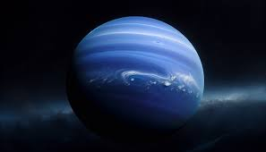
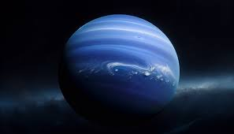

Neptuno es el octavo y último planeta del Sistema Solar, conocido por su color azul intenso y sus intensos vientos, su color se debe a la presencia de metano en su atmósfera, que absorbe la luz roja y refleja la azul, Neptuno es un gigante helado, similar a Urano, y tiene un diámetro de aproximadamente 49,244 kilómetros, lo que lo convierte en el cuarto planeta más grande del sistema, al igual que Urano, Neptuno está compuesto principalmente de hidrógeno, helio y agua, con una capa interna de hielo y rocas en su núcleo, aunque su atmósfera está formada principalmente por hidrógeno y helio, contiene una mayor proporción de gases como el metano, lo que le da su característico color azul, la atmósfera de Neptuno es extremadamente activa, con vientos que alcanzan velocidades de hasta 2,100 km/h, los más rápidos de todo el Sistema Solar, estos vientos generan enormes tormentas, como la Gran Mancha Oscura, una tormenta similar a la Gran Mancha Roja de Júpiter, pero que se ha observado más pequeña y más variable.
Un día en Neptuno dura aproximadamente 16 horas, pero su órbita alrededor del Sol es mucho más larga, completando un año en 165 años terrestres, debido a su gran distancia del Sol, Neptuno recibe solo una fracción de la luz y el calor que recibe la Tierra, lo que hace que su temperatura promedio sea extremadamente fría, alrededor de -214 °C, Neptuno tiene 14 lunas conocidas, siendo la más grande Tritón, Tritón es un satélite interesante porque tiene una órbita retrograda, lo que significa que orbita en la dirección opuesta a la rotación del planeta, esta peculiaridad sugiere que Tritón podría haber sido capturado por la gravedad de Neptuno y no se formó en su órbita original, Tritón también muestra una superficie congelada y geiseres de nitrógeno, lo que sugiere una actividad geológica interna, el campo magnético de Neptuno es bastante fuerte y está inclinado con respecto a su eje de rotación, de manera similar a Urano, lo que hace que su comportamiento sea irregular y complicado de estudiar, la única nave espacial que ha visitado Neptuno fue Voyager 2, que pasó cerca del planeta en 1989, durante este sobrevuelo, se recogieron datos valiosos sobre su atmósfera, sistema de anillos, lunas y viento, desde entonces, Neptuno sigue siendo un planeta enigmático que espera ser estudiado más a fondo en futuras misiones espaciales.
- Resumen
- Tamaño: Diámetro de 49,244 km (ligeramente más pequeño que Urano).
- Distancia del Sol: 4,495 millones de km.
- Día: 16 horas.
- Año: 164.8 años terrestres.
- Temperatura: Muy frío (~-214°C).
- Atmósfera: Hidrógeno, helio y metano (color azul intenso).
- Otros Datos
- Color: Su color azul verdoso proviene del metano en su atmósfera, que absorbe la luz roja.
- Lunas inusuales: Sus lunas llevan nombres de personajes de obras de Shakespeare, como Titania y Oberón.
- Características únicas: Tiene los vientos más rápidos del sistema solar (~2,100 km/h).